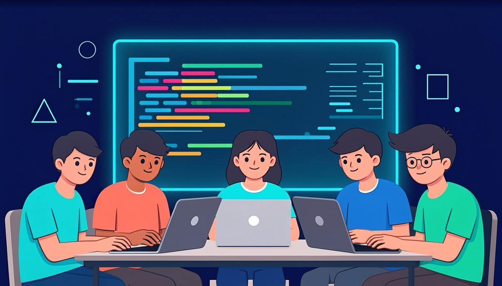
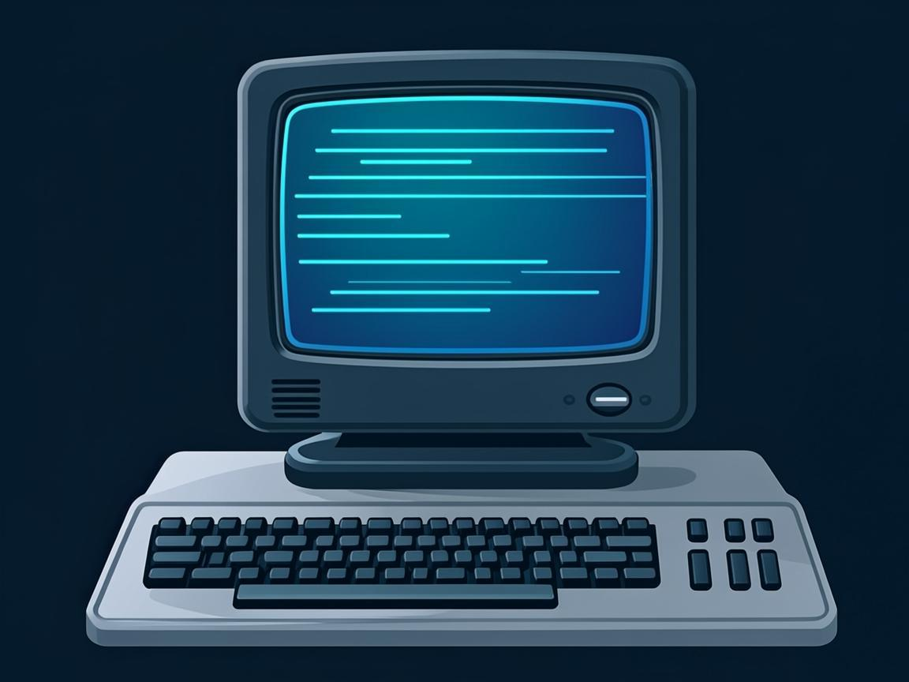
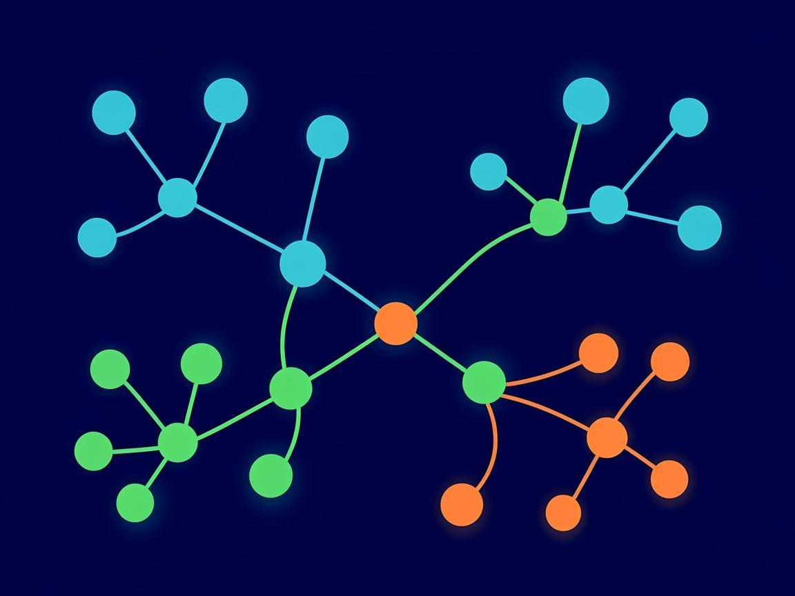

نخستین شمارهٔ نشریهٔ الکترونیکی انجمن با دو بخش دائمی «اخبار هوش مصنوعی» و «اخبار فناوری و کدنویسی» میرسد. خبرها فقط از منابع معتبر انتخاب میشوند — وبلاگ رسمی زبانها، گزارشهای دانشگاهی و رسانههای شناختهشدهٔ فناوری — و تاریخ هر خبر در متن آمده است تا همیشه قابل پیگیری باشد. دنیای نرمافزار هر هفته بههم میریزد؛ کار ما این است که مهمترینش را برایتان صاف و کوتاه بگوییم.
در درسهای Rust تمرین گذاشته بودیم: «بنویس دوست داری با Rust چه چیزی بسازی». پاسخها رسید و جالب بود؛ بازی، ابزار محاسبه و ربات بیشترین رأی را آوردند. در همین شماره زبان C را معرفی میکنیم — زبانی که تقریباً همهٔ دنیای دیجیتال روی آن ساخته شده — و نرمافزار Git را که پروژهٔ شما را زمانسفر میکند.
سری «Rust از صفر» ادامه دارد: درس دوم نصب Rust و ساخت اولین پروژه را قدمبهقدم گفت و درس سوم سراغ چاپ متن و فرمان println! رفت. از هفتهٔ بعد متغیرها و انواع داده شروع میشود. اگر جایی گیر کردی، سؤالت را در کانال بپرس — درس بعدی با توجه به سؤالها آماده میشود.
به تمرین «چه میخواهی بسازی؟» پاسخهای خوبی رسید. رایجترین آرزوها: ساخت بازی، نوشتن ابزار محاسبهای برای درسها و ساخت ربات. برنامهٔ ما این است که در پستهای متنوع، مسیر ساختن یکی از همینها را مرحلهبهمرحله باز کنیم. منتظر پاسخهای تمرین این شماره در شمارهٔ بعدی هستیم.
گزارش سالانهٔ «شاخص هوش مصنوعی» دانشگاه استنفورد نوشته است نتیجهٔ مدلها در آزمون SWE-bench — که مسئلههای واقعی کدنویسی را میسنجد — در یک سال از حدود ۶۰ درصد به نزدیک ۱۰۰ درصد رسیده و ۸۸ درصد سازمانها از این ابزارها استفاده میکنند. نکتهٔ ما برای دانشآموزها روشن است: کسی که خودش کد را میفهمد، فرمانده است؛ کسی که فقط کپی میکند، تماشاچی.
شرکتهای بزرگ ابزارهای تازهای معرفی کردند که بهجای «پاسخ دادن»، خودشان چند کار را همزمان دنبال میکنند؛ به اینها «عامل» یا ایجنت میگویند. نمونهاش عاملهای همیشهروشن جدید داخل نرمافزارهای گفتوگوی کاری که میتوانند پروژه را جلو ببرند و گزارش بدهند. مفهوم ایجنت بهزودی مثل مفهوم «اپلیکیشن» عادی میشود؛ ارزش کسی که الگوریتم بلد است بیشتر میشود.
در چند هفتهٔ اخیر چند مدل هوش مصنوعی قوی بهصورت رایگان و متنباز منتشر شد؛ از جمله نسخهٔ جدید DeepSeek در ۲۵ مهر و خانوادهٔ Nemotron شرکت انویدیا در ۲۳ مهر. متنباز یعنی میتوانی معماریشان را بخوانی، روی کامپیوتر خودت اجرا کنی و بدانی دقیقاً چه خبر است — همان روحیهای که پروژههای متنباز مثل لینوکس را ساخت.
جالبترین یافتهٔ گزارش استنفورد: مدلها در المپیاد جهانی ریاضی مدال طلا میگیرند، اما در خواندن ساعت عقربهای فقط حدود نیمی از مواقع درست عمل میکنند. به این میگویند «مرز دندانهدار»؛ تواناییها ناهموار رشد میکنند. درسش برای ما: نه اسراف در تحسین، نه ترس — ابزار را بشناس و نقاط ضعفش را بلد باش.
وبلاگ رسمی زبان Rust انتشار نسخهٔ ۱.۹۹ را در ۹ مهر و بهروزرسانی ۱.۹۹.۱ را در ۲۳ مهر اعلام کرد؛ یعنی قدم بعدی، نسخهٔ تاریخی ۱۰۰ است. زنگ تفریح ریاضی: Rust هر شش هفته یک نسخه میدهد؛ اگر در درسهای ما Rust نصب کردهای، با فرمان rustup update همیشه تازه نگهش دار.
تیم Rust دربارهٔ نشت کلیدهای امنیتی در سرویسهای ساخت خودکار (GitHub Actions) هشدار رسمی داد. درسش برای هر برنامهنویس تازهکاری است: توکن و رمز هرگز نباید داخل کد، فایل لاگ یا پیام کانال نوشته شود؛ در فایل جداگانه و بیرون از پروژه نگهداری میشود. همین قاعده را رعایت کنی، یک مشکل بزرگ همیشه جلوی پایت را گرفتهای.
بزرگترین رویداد سالانهٔ گیتهاب ۶ و ۷ آبان در سانفرانسیسکو برگزار میشود و بخش آنلاین رایگان هم دارد. هر سال مهمترین خبرهای ابزارهای توسعهدهندگان در همین همایش اعلام میشود. بعد از رویداد، خلاصهٔ مهمترین خبرهایش را در شمارهٔ آذر مجله میخوانید.
سه همایش بزرگ متنباز پشتسرهم برگزار شد: All Things Open و کنفرانس PyTorch و سپس همایش عاملهای هوش مصنوعی لینوکسفاندیشن. نکتهٔ خوش برای ما: ویدیو و جزوهٔ بیشتر این رویدادها بعداً بهصورت رایگان منتشر میشود؛ دنیای متنباز هنوز بزرگترین کتابخانهٔ درسی رایگان دنیاست.

اگر دنیای نرمافزار یک درخت باشد، C ریشهٔ آن است. سیستمعامل ویندوز و لینوکس، پایهٔ زبان پایتون، و هزاران نرمافزار دیگر با C نوشته شدهاند. این زبان در سال ۱۹۷۲ ساخته شد و هنوز بعد از بیش از پنجاه سال جزو پرکاربردترینهاست؛ چون کوچک، سریع و نزدیک به سختافزار است و تقریباً روی هر دستگاهی — از ریزکنترلکنندهٔ یک دستگاه الکتریکی تا ابررایانه — اجرا میشود.
چرا برای دانشآموز مهم است؟ چون C مفاهیم پایه را بدون میانهرو بیرحمانه شفاف میکند: متغیر واقعاً یک خانهٔ حافظه است، آرایه واقعاً پشتسرهم چیده شده و هر بایت حساب شده. کسی که C را بفهمد، بعداً C++ و Rust و هر زبان دیگری را خیلی راحتتر یاد میگیرد؛ Rust خودش ادامهٔ همین راه است با وسواس بیشتر روی امنیت.
برنامهٔ آشنای ما در C اینطور نوشته میشود؛ به printf و return 0 دقت کن:
| #include <stdio.h> | آوردن کتابخانهٔ ورودی/خروجی استاندارد برای استفاده از printf |
| printf | چاپ متن روی صفحه؛ \n یعنی برو خط بعد |
| return 0 | پایان موفق برنامه؛ عدد صفر به سیستمعامل گزارش میشود |
Git «دفتر ثبت تغییرات» پروژه است؛ فکرش کن مثل زمانسفر برای کدهایت. هر بار که کدت را به حالت درست رساندی، یک «کامیت» میزنی — یعنی عکس یادگاری از وضعیت فعلی پروژه ذخیره میشود. فردا اگر چیزی خراب شد، به عقب برمیگردی و نسخهٔ سالم را برمیداری. هیچ برنامهنویس حرفهای در دنیا نیست که Git بلد نباشد.
Git از نوع «توزیعشده» است؛ یعنی کل تاریخچهٔ پروژه روی کامپیوتر خودت کپی میشود و بدون اینترنت هم کار میکند. سایتهایی مثل GitHub و GitLab خانهٔ پروژههای متنباز دنیا هستند و پروژهها را برای همکاری چندنفره میزبانی میکنند. در مسابقات کدنویسی هم ارائهٔ سورس مرتب و تاریخچهٔ واقعی کار، امتیاز محسوب میشود.
| git init | آغاز دفتر ثبت تغییرات در پوشهٔ پروژه |
| git status | وضعیت الان؛ چه چیزی عوض شده و ثبت نشده |
| git log --oneline | تاریخچهٔ پروژه؛ هر کامیت یک خط |
برای شروع با Git فقط سه فرمان لازم داری؛ همین سه تا پروژهات را امن میکند:

در پوشهٔ پروژه اجرا کن؛ از این لحظه Git تماشاچی تغییرات است
همهٔ تغییرات را برای ثبت علامت بزن
ثبت نهایی با یک پیام کوتاه؛ مثلاً «نسخهٔ اول بازی»
پیشنهاد: همین امروز پروژهای که در درسهای Rust ساختی را با این سه فرمان به یک مخزن واقعی تبدیل کن؛ در پستهای متنوع کانال هم بهزودی کار با مخزن را بیشتر باز میکنیم.